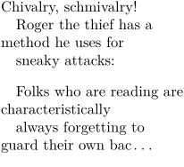

Contents
Summary
The command
\definelines
is used for defining line-oriented environments.
Settings
Description
\definelines
[mylines]
defines a
\startmylines
environment (equivalent to
\startlines
) that can be set up with
\setupmylines
(equivalent to
\setuplines
). An optional second argument allows setups to be passed simultaneously with the definition, instead of via
\setupmylines
.
Examples
Example 1
-
% define, then set up \definelines[evenly] \setuplines[evenly][indenting={yes, 1em, even}] % define with setup \definelines[oddly][indenting={yes, 1em, odd}] \startevenly Chivalry, schmivalry! Roger the thief has a method he uses for sneaky attacks:% Comment out last newline \stopevenly \startoddly Folks who are reading are characteristically always forgetting to guard their own bac\unknown% Comment out last newline \stopoddly
- 